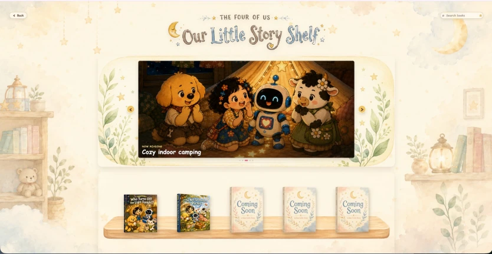
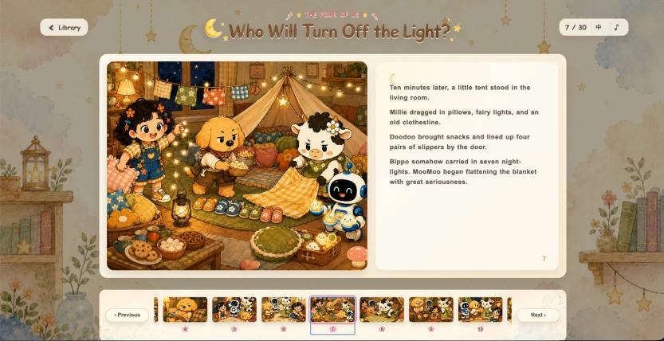

Digital storybook · Web design
The Four of Us
Make a digital story feel inviting to explore
The illustrated library connects book discovery, a preview of the story, and a page-by-page reader through a consistent visual design.
Role Web experience and visual design.
Open the story experience ↓
Playable web experience
Who Will Turn Off the Light?
Explore the original story shelf, preview the book, and read all 30 illustrated pages. The reader offers English, Chinese, and read-aloud where supported by the browser.
Discover a story on the illustrated shelf
The shelf pairs a featured scene with recognizable covers. A book detail page gives readers a short summary and illustrated previews before they start.

Keep illustration, story, and navigation together
Each spread pairs text with an illustration. Page controls and thumbnails let readers go back or jump ahead, with optional read-aloud and a language switch.
